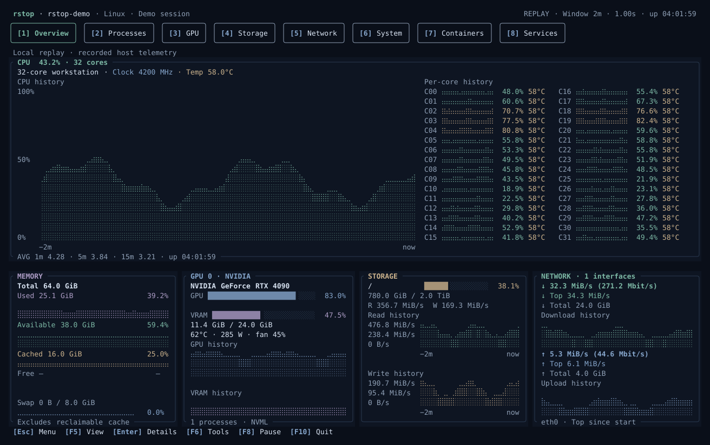

One terminal.
Your whole system.
A local resource monitor. Built in Rust.
Linux · macOS · Windows

Everything, in view.
01 / 08Native UI · Demo data
Make it yours.
Your terminal.
A clearer perspective.
curl --proto '=https' --tlsv1.2 -LsSf https://github.com/fan-ziqi/rstop/releases/latest/download/rstop-installer.sh | sh